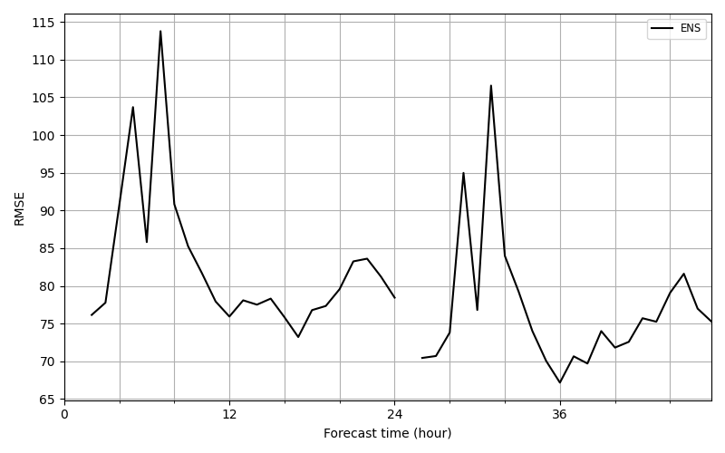
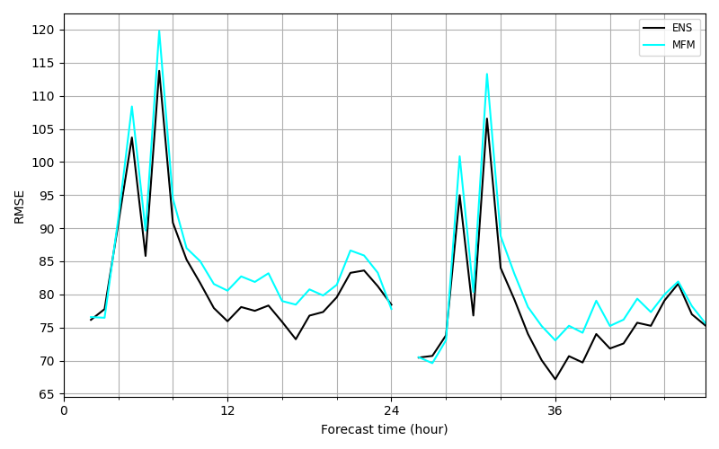

Tutorial#
Introduction#
First you have to import the package.
In [1]: import evaltools as evt
In this package, the main class of objects is
Evaluator.
From an object of this kind you can compute all sort of statistics
and draw charts.
Classes Observations and
Simulations are precursors
of Evaluator. These two classes are
quite similar and the main way to instanciate them is by reading timeseries
files. What we call a timeseries file is a file containing two columns
separated by one or more space, the first column containing times (in
yyyymmddhh format) and the second column containing float values.
Examples of timeseries files can be found in “doc/sample_data”.
To begin working with Evaluator
objects you need a list of stations.
A example of a station listing is located in “doc/sample_data” and can be
read by
utils.read_listing.
In [2]: stations = evt.utils.read_listing("./sample_data/listing")
In [3]: stations
Out[3]:
site area lat lon
code
AD0942A bac urb 42.50969 1.53914
AT0VOR1 bac rur 46.67970 12.97190
AT10001 bac sub 47.84000 16.52670
AT31401 bac sub 48.08610 16.30220
AT31402 tra sub 48.12500 16.33170
CH0002R bac rur 46.81310 6.94447
CH0005A bac sub 47.40290 8.61341
CH0005R bac rur 47.06740 8.46334
CH0010A bac urb 47.37760 8.53042
CZ0ALIB bac sub 50.00730 14.44590
CZ0HHKB tra urb 50.19540 15.84640
CZ0JKOS bac rur 49.57340 15.08030
CZ0PPLA tra urb 49.73240 13.40230
CZ0TOPR ind urb 49.85630 18.26970
We can now instanciate Observations
and Simulations objects from
“doc/sample_data” timseries files.
In [4]: from datetime import date
In [5]: start_date = date(2017, 6, 1)
In [6]: end_date = date(2017, 6, 6)
In [7]: observations = evt.Observations.from_time_series(
...: generic_file_path="./sample_data/observations/{year}_co_{station}",
...: correc_unit=1e9,
...: species='co',
...: start=start_date,
...: end=end_date,
...: stations = stations,
...: forecast_horizon=2,
...: )
...:
In [8]: simulations = evt.Simulations.from_time_series(
...: generic_file_path=(
...: "./sample_data/ENSforecast/J{forecastDay}/{year}_co_{station}"
...: ),
...: stations_idx=stations.index,
...: species='co',
...: model='ENS',
...: start=start_date,
...: end=end_date,
...: forecast_horizon=2,
...: )
...:
To understand the meaning of all the arguments, do not hesitate to refer to the API documentation.
Let’s create an Evaluator object and
start using its methods to compute statistics.
In [9]: eval_object = evt.Evaluator(observations, simulations)
In [10]: eval_object.temporal_scores(['RMSE', 'FracBias', 'PearsonR'])
Out[10]:
{'D0': RMSE FracBias PearsonR
code
AD0942A NaN NaN NaN
AT0VOR1 66.870066 76.484397 0.456633
AT10001 55.469560 2.077277 0.148668
AT31401 32.292246 -4.318267 0.285162
AT31402 28.410182 -1.741556 0.586555
CH0002R 35.112389 24.917451 0.552076
CH0005A 42.676788 12.441253 0.487120
CH0005R 38.758369 24.589524 0.542966
CH0010A 43.559315 -8.311611 0.448940
CZ0ALIB 177.729834 -77.750712 0.452760
CZ0HHKB 98.413269 -49.804323 0.303197
CZ0JKOS 69.449904 -42.804008 0.366283
CZ0PPLA 144.927767 -70.661566 0.262523
CZ0TOPR 123.694578 8.622130 -0.022233,
'D1': RMSE FracBias PearsonR
code
AD0942A NaN NaN NaN
AT0VOR1 61.796662 72.098937 0.201367
AT10001 52.191512 -14.062444 0.161187
AT31401 32.975884 -6.221032 0.367900
AT31402 30.017664 -2.887712 0.569830
CH0002R 29.146724 21.548927 0.661740
CH0005A 35.064446 6.494999 0.517632
CH0005R 31.830369 19.650583 0.621802
CH0010A 47.011353 -15.433575 0.430434
CZ0ALIB 158.377078 -70.658442 0.670168
CZ0HHKB 93.912730 -47.933881 0.434367
CZ0JKOS 58.997009 -34.301921 0.678209
CZ0PPLA 136.110242 -69.087018 0.496665
CZ0TOPR 129.461101 13.036248 0.055859}
Plotting#
All plotting functions are gathered in
plotting
module. For instance, let’s draw mean RMSE over the 2 days forecast period with
plot_mean_time_scores
function.
In [11]: evt.plotting.plot_mean_time_scores(
....: [eval_object],
....: output_file="./source/charts/mean_RMSE_ENS",
....: score='RMSE',
....: )
....:
Out[11]:
(<Figure size 800x500 with 1 Axes>,
<Axes: xlabel='Forecast time (hour)', ylabel='RMSE'>)
And we get:
If we want more than one simulation drawn on the graph, we just have to
create other Evaluator objects and
pass them to the plotting function.
In [12]: simulations2 = evt.Simulations.from_time_series(
....: generic_file_path=(
....: "./sample_data/MFMforecast/J{forecastDay}/{year}_co_{station}"
....: ),
....: stations_idx=stations.index,
....: species='co',
....: model='MFM',
....: start=start_date,
....: end=end_date,
....: forecast_horizon=2,
....: )
....:
In [13]: eval_object2 = evt.Evaluator(
....: observations, simulations2, color='#00FFFF',
....: )
....:
In [14]: evt.plotting.plot_mean_time_scores(
....: [eval_object, eval_object2],
....: output_file="./source/charts/mean_RMSE_MFM",
....: score='RMSE',
....: )
....:
Out[14]:
(<Figure size 800x500 with 1 Axes>,
<Axes: xlabel='Forecast time (hour)', ylabel='RMSE'>)
And we get:
Different types of series#
Evaluator objects have a series type
attribute
In [15]: eval_object.series_type
Out[15]: 'hourly'
Here, the series type is "hourly". Indeed, when we construct an object
from timeseries file, it is the default value which means we work with
data measured at hourly time steps.
Some Evaluator methods will return an
object with seriesType attribute equal to "daily".
For instance,
In [16]: daily_max_object = eval_object.daily_max()
In [17]: daily_max_object.series_type
Out[17]: 'daily'
We have thus created a new Evaluator
object which data is now composed of daily maximum values. Let’s compare
observation data held within eval_object and daily_max_object for a
given station.
In [18]: eval_object.obs_df['AT0VOR1']
Out[18]:
2017-06-01 00:00:00 52.42
2017-06-01 01:00:00 51.94
2017-06-01 02:00:00 52.91
2017-06-01 03:00:00 51.51
2017-06-01 04:00:00 50.15
...
2017-06-07 19:00:00 63.87
2017-06-07 20:00:00 64.79
2017-06-07 21:00:00 63.82
2017-06-07 22:00:00 60.28
2017-06-07 23:00:00 61.20
Freq: h, Name: AT0VOR1, Length: 168, dtype: float64
In [19]: daily_max_object.obs_df['AT0VOR1']
Out[19]:
2017-06-01 62.95
2017-06-02 56.01
2017-06-03 81.38
2017-06-04 76.19
2017-06-05 59.85
2017-06-06 55.10
2017-06-07 64.79
Freq: D, Name: AT0VOR1, dtype: float64
Data with daily_max_object is given at daily time steps. Yet we can still
apply statical methods to this object to get scores per station for instance:
In [20]: daily_max_object.temporal_scores(['RMSE', 'FracBias', 'PearsonR'])
Out[20]:
{'D0': RMSE FracBias PearsonR
code
AD0942A NaN NaN NaN
AT0VOR1 63.329672 65.026561 0.715997
AT10001 63.759279 -23.786831 -0.041307
AT31401 58.265557 -15.302091 -0.153068
AT31402 46.254672 -14.800695 0.748693
CH0002R 22.051733 0.446444 0.747533
CH0005A 46.558323 15.454695 0.117165
CH0005R 44.290206 26.646097 0.514922
CH0010A 44.039217 -7.093002 0.368658
CZ0ALIB 221.122365 -82.283008 0.340032
CZ0HHKB 194.293000 -77.853086 -0.416637
CZ0JKOS 82.474228 -46.437766 0.495443
CZ0PPLA 257.489557 -90.305736 -0.277682
CZ0TOPR 280.335540 -27.149906 -0.498600,
'D1': RMSE FracBias PearsonR
code
AD0942A NaN NaN NaN
AT0VOR1 58.092060 60.541266 0.387109
AT10001 88.435543 -36.932643 -0.093816
AT31401 51.828971 -18.108193 0.548205
AT31402 43.623464 -14.001010 0.850362
CH0002R 21.684452 -0.902961 0.833997
CH0005A 46.927265 6.196613 -0.093322
CH0005R 40.043196 24.650734 0.668365
CH0010A 63.875332 -13.771354 -0.368416
CZ0ALIB 198.456905 -77.289600 0.774305
CZ0HHKB 185.439242 -74.547842 0.040638
CZ0JKOS 70.772303 -39.570297 0.714519
CZ0PPLA 175.483594 -77.518512 0.563888
CZ0TOPR 279.958989 -27.023042 -0.171968}